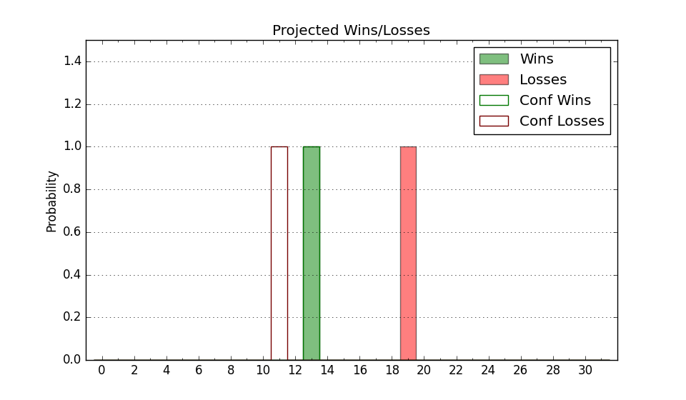

| Home | Game Probabilities | Conferences | Preseason Predictions | Odds Charts | NCAA Tournament |
| City: | Thibodaux, Louisiana | |
| Conference: | Southland (5th)
| |
| Record: | 13-11 (Conf) 13-19 (Overall) | |
| Ratings: | Comp.: -7.2 (243rd) Net: -7.2 (243rd) Off: 105.2 (244th) Def: 112.4 (236th) SoR: 0.0 (102nd) |
| Remaining | ||||||
|---|---|---|---|---|---|---|
| Date | Opponent | Win Prob | Pred. | |||
| Previous | Game Score | |||||
| Date | Opponent | Win Prob | Result | Off | Def | Net |
| 11/4 | @Kentucky (28) | 2.4% | L 51-77 | -18.5 | 25.9 | 7.4 |
| 11/7 | @Eastern Illinois (313) | 55.6% | L 57-65 | -27.7 | 8.1 | -19.7 |
| 11/12 | @Valparaiso (157) | 19.3% | L 63-68 | -2.5 | 6.6 | 4.1 |
| 11/15 | @Murray St. (109) | 12.0% | L 79-99 | -1.6 | -10.0 | -11.6 |
| 11/22 | @Oklahoma St. (76) | 7.1% | L 81-95 | 0.4 | 7.9 | 8.3 |
| 11/28 | @Tulane (223) | 30.9% | L 72-82 | 1.6 | -5.5 | -3.9 |
| 12/2 | @Creighton (69) | 6.6% | L 76-96 | 14.8 | -17.2 | -2.5 |
| 12/6 | Incarnate Word (272) | 70.6% | W 74-67 | 0.6 | 5.7 | 6.4 |
| 12/17 | Houston Baptist (283) | 73.6% | W 79-64 | 3.3 | 10.0 | 13.3 |
| 12/21 | @Pacific (105) | 11.6% | L 82-95 | 19.8 | -14.5 | 5.3 |
| 12/29 | @Tex A&M Corpus Chris (177) | 22.6% | W 76-71 | 23.8 | -2.9 | 20.9 |
| 12/31 | @UT Rio Grande Valley (125) | 14.6% | W 71-69 | 4.0 | 17.6 | 21.7 |
| 1/3 | Texas A&M Commerce (302) | 77.4% | W 80-58 | -1.7 | 20.7 | 19.1 |
| 1/5 | Northwestern St. (284) | 74.0% | W 74-72 | -5.1 | -3.2 | -8.3 |
| 1/10 | @New Orleans (200) | 26.4% | W 90-77 | 39.7 | -9.9 | 29.8 |
| 1/12 | @McNeese St. (64) | 6.2% | L 68-94 | -1.8 | -3.7 | -5.4 |
| 1/17 | Lamar (228) | 62.0% | L 80-90 | 8.2 | -30.7 | -22.5 |
| 1/19 | Stephen F. Austin (87) | 24.7% | L 62-79 | -7.5 | -8.4 | -16.0 |
| 1/24 | @Southeastern Louisiana (282) | 44.9% | L 61-67 | -17.0 | 8.1 | -8.9 |
| 1/27 | New Orleans (200) | 54.9% | L 62-80 | -25.6 | -1.4 | -27.0 |
| 1/31 | @Texas A&M Commerce (302) | 50.2% | W 72-68 | 0.3 | 6.7 | 7.0 |
| 2/2 | @Northwestern St. (284) | 45.5% | W 61-58 | -9.0 | 16.1 | 7.1 |
| 2/7 | Tex A&M Corpus Chris (177) | 49.8% | L 76-83 | 8.1 | -21.4 | -13.4 |
| 2/9 | UT Rio Grande Valley (125) | 36.8% | L 72-92 | -2.4 | -26.5 | -28.9 |
| 2/14 | @Incarnate Word (272) | 41.3% | W 91-83 | 27.4 | -14.2 | 13.2 |
| 2/16 | @Houston Baptist (283) | 45.0% | L 68-72 | -6.3 | -1.0 | -7.4 |
| 2/21 | @Stephen F. Austin (87) | 8.8% | L 78-81 | 20.7 | -5.1 | 15.6 |
| 2/23 | @Lamar (228) | 32.4% | W 53-52 | -19.6 | 29.6 | 10.0 |
| 2/28 | Southeastern Louisiana (282) | 73.5% | W 68-60 | -4.8 | 7.0 | 2.2 |
| 3/2 | McNeese St. (64) | 18.4% | L 65-75 | -1.3 | 4.6 | 3.4 |
| 3/8 | (N) Northwestern St. (284) | 60.6% | W 61-47 | -8.8 | 22.2 | 13.4 |
| 3/9 | (N) UT Rio Grande Valley (125) | 24.0% | L 68-86 | -0.3 | -15.4 | -15.8 |
| Stats & Trends | |||||
|---|---|---|---|---|---|
| Current | Day | Week | Month | Season | |
| Composite | -7.2 | -0.4 | -0.2 | -1.2 | -1.5 |
| Comp Rank | 243 | -9 | -5 | -21 | -50 |
| Net Efficiency | -7.2 | -0.4 | -0.2 | -1.2 | -- |
| Net Rank | 243 | -9 | -5 | -20 | -- |
| Off Efficiency | 105.2 | -0.0 | -0.3 | +0.8 | -- |
| Off Rank | 244 | -1 | -7 | +2 | -- |
| Def Efficiency | 112.4 | -0.4 | +0.1 | -2.0 | -- |
| Def Rank | 236 | -11 | +3 | -26 | -- |
| SoS Rank | 151 | +5 | -4 | -23 | -- |
| Exp. Wins | 13.0 | -- | +1.0 | +0.8 | -2.1 |
| Exp. Conf Wins | 13.0 | -- | +1.0 | +0.8 | +1.2 |
| Conf Champ Prob | 0.0 | -- | -- | -- | -6.1 |

| Advanced Stats | ||
|---|---|---|
| Stat | Value | Rank |
| Off Eff FG % | 0.500 | 224 |
| Off Ast Ratio | 0.139 | 230 |
| Off ORB% | 0.273 | 263 |
| Off TO Rate | 0.145 | 180 |
| Off FT Ratio | 0.309 | 282 |
| Def Eff FG % | 0.562 | 332 |
| Def Ast Ratio | 0.163 | 296 |
| Def ORB% | 0.334 | 296 |
| Def TO Rate | 0.185 | 13 |
| Def FT Ratio | 0.403 | 293 |